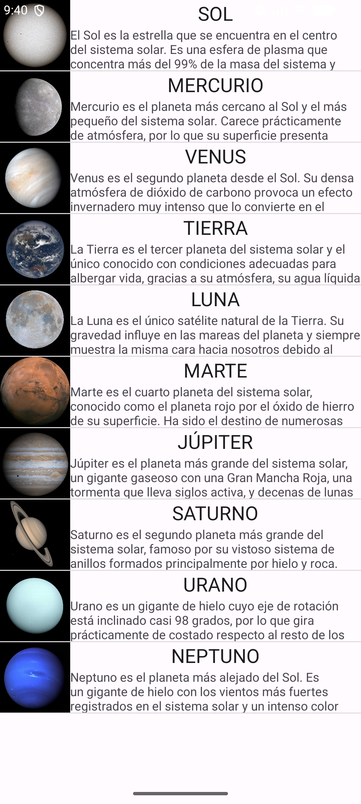
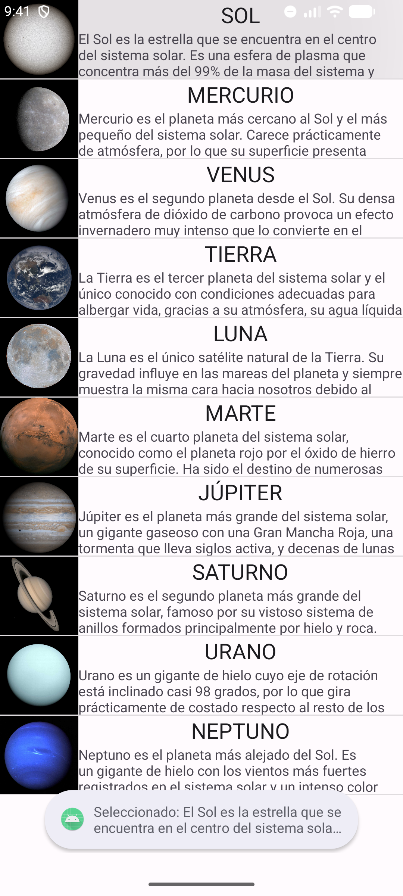
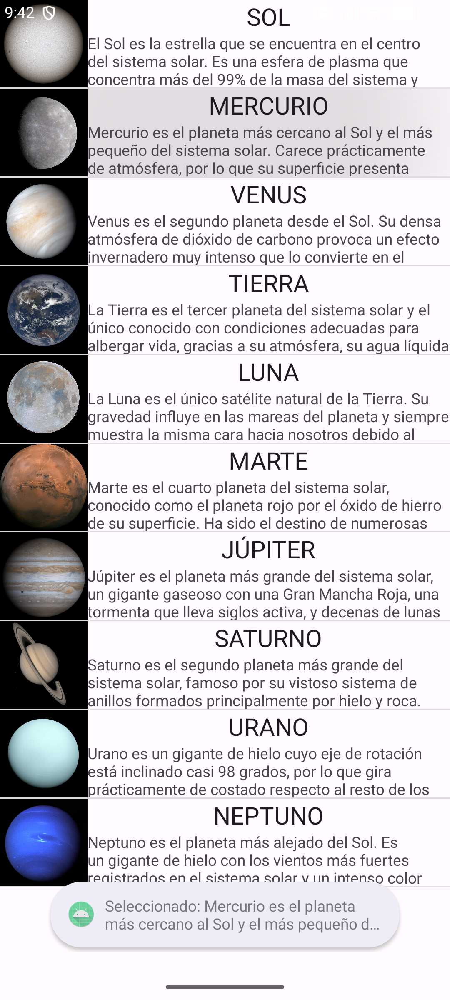
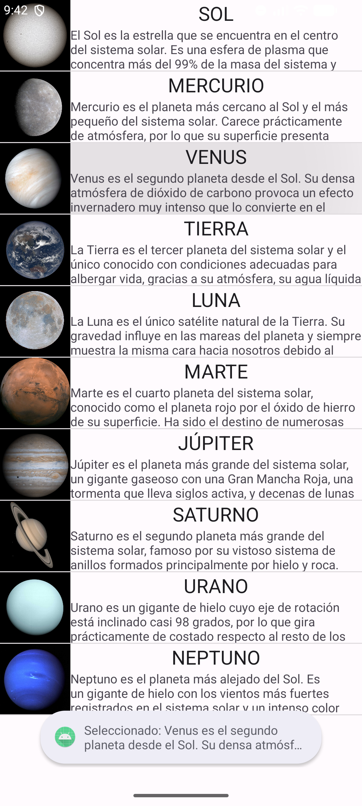
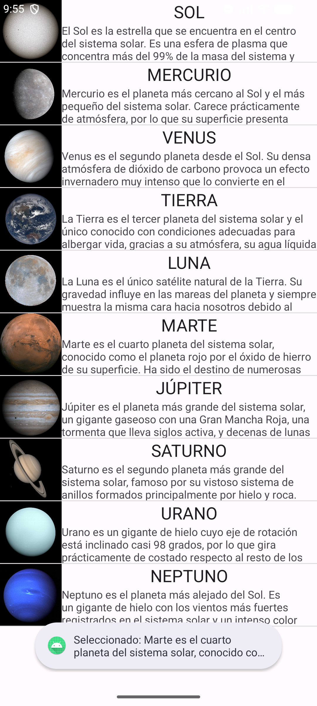

| Asignatura: | Desarrollo de Aplicaciones Móviles Nativas |
| Tarea: | Tarea: La Clase ListView |
| Alumno: | Angel Frausto Robles |
| Grupo: | 7CM4 |
| Fecha: | 19 de septiembre de 2026 |
Esta tarea trabaja con la clase ListView, una vista adaptadora que
muestra una colección desplazable de elementos sin conocer de antemano su tipo ni su contenido.
En su lugar, pide cada vista a un ListAdapter conforme el usuario se
desplaza. El material del profesor presenta un ejemplo con una lista de aves (imagen + nombre +
descripción, seleccionable con un Toast), y el Ejercicio 1 pide
replicar exactamente ese mismo patrón para mostrar los planetas del sistema solar, incluyendo al
Sol y a la Luna.
Objetivos:
BaseAdapter propio (ListaAdapter) que reutilice vistas para mejorar el rendimiento del scroll.ListaEntrada).setOnItemClickListener mostrando un Toast.
Proyecto Java con MainActivity extendiendo
android.app.Activity directamente. La estructura es la misma que el
ejemplo de las aves del material del profesor: ListaEntrada (modelo de
datos: imagen, texto superior, texto inferior), ListaAdapter (adaptador
abstracto reutilizable) y MainActivity (arma la lista de 10 elementos:
el Sol, los ocho planetas y la Luna, y conecta el ListView). El layout
listado.xml contiene únicamente el ListView,
y activity_main.xml se reutiliza como la plantilla de cada fila (imagen +
dos líneas de texto), igual que en el ejemplo original.

Al tocar cada fila se dispara un Toast con el texto "Seleccionado: " seguido de la descripción del cuerpo celeste.




[Conclusiones personales del alumno sobre el uso de ListView, BaseAdapter y la reutilización de vistas.]
developer.android.com/reference/android/widget/ListView